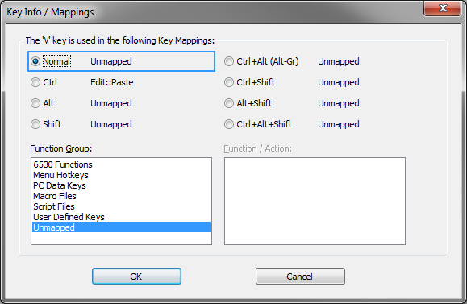

The Keyboard Options window is used to map BlueZone 6530
program functions to key sequences on the keyboard and to control
various keyboard related options.
Key Mappings tab
Note: If you have
installed a non-English version of BlueZone, the default keyboard
map that displays is based on your currently selected language in
the Regional and Language Options in Windows.
- Gray keys
- Gray keys can be mapped. If you click a gray key, the Key Info/Mappings
window opens and lists all of the key mappings for each function group.
It also lists any combination key mappings that this key is used in.
The
following figure shows the associated mappings with the V key. The
Ctrl key is mapped to the Edit::Paste Menu Hotkeys. All of the other
available mappings are unmapped.
Figure 1. BlueZone 6530 key mappings information

- Red keys
- Red keys cannot be used to map BlueZone 6530 Functions.
- Yellow keys
- Yellow keys are caution keys. Care should be taken when using
the yellow keys to map BlueZone 6530 Functions. The caution keys
include the Alt keys and the Esc key. Windows uses the Alt keys with
menu accelerators and the Esc key is mapped to Esc.
- Options
- Functions Group: Lists the various groups
of keyboard functions that are available for keyboard mapping.
- Functions: Lists the various functions
available for key mapping. The functions displayed are dependent
on which function is selected in the Functions Group menu.
Keyboard Type
- Key Mappings: Lists the key mapping or
mappings if any, that execute the highlighted function in the Functions list
box.
- Print
- Allows you to print out the mappings for whatever is displayed
in the Functions Group menu. For example,
if you want a printout of all the 6530 keyboard functions and what
keys they are currently mapped to, select 6530 Functions from
the Functions Group menu, and click Print.
- New
- Adds a new key mapping entry to the Key Mappings list.
Functions can be mapped to more than one key.
- Edit
- Edits the highlighted key mapping entry.
- Delete
- Removes the highlighted key mapping entry from the Key
Mappings list.
- OK
- Accepts the key mapping and assigns it to the 6530 Function.
- Cancel
- Cancels the key mapping.